Python Developer | Flask | SQL | HTML | CSS | JavaScript | MySQL
Welcome to my portfolio website. I am passionate about Python development and web development.
I am a Computer Science student with a strong interest in Python development, Web Development, and Artificial Intelligence. I enjoy building real world projects using Python, Flask, SQL, HTML, CSS, and JavaScript. I am currently focusing on learning Data Structures and Algorithms (DSA) to strengthen my problem solving skills. I am continuously exploring AI technologies and building practical projects. I am an aspiring Software Developer seeking opportunities to grow and contribute.
AI Interview Preparation System is a web application developed using Python, Flask, HTML, CSS, JavaScript and MySQL. It helps students and job seekers practice interview questions and improve their interview skills.
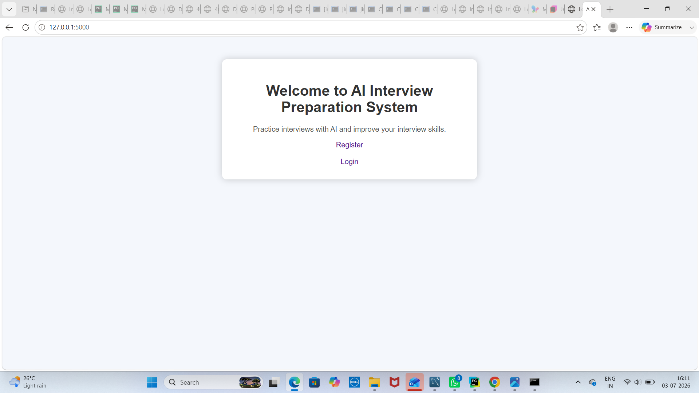
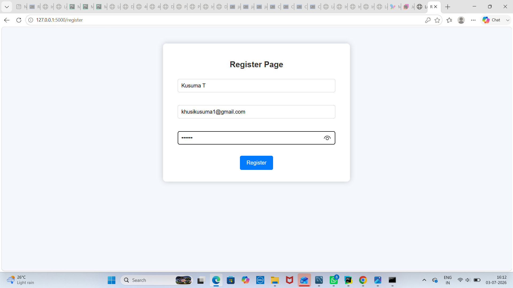
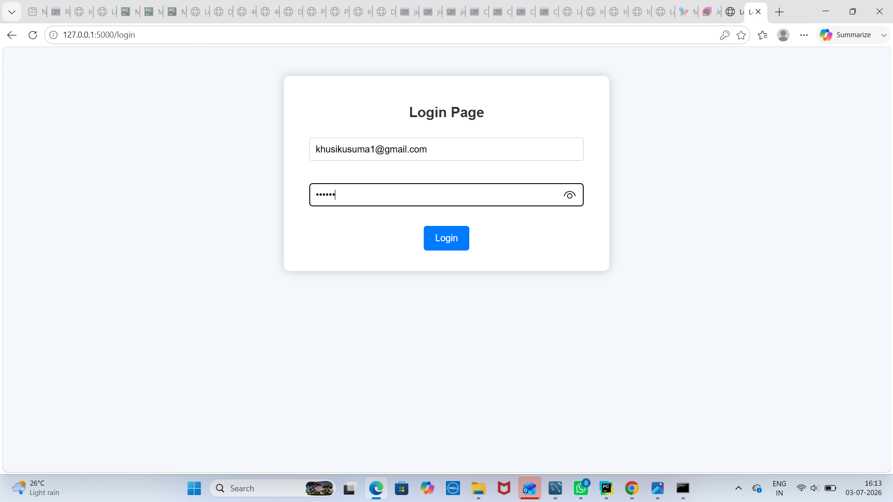
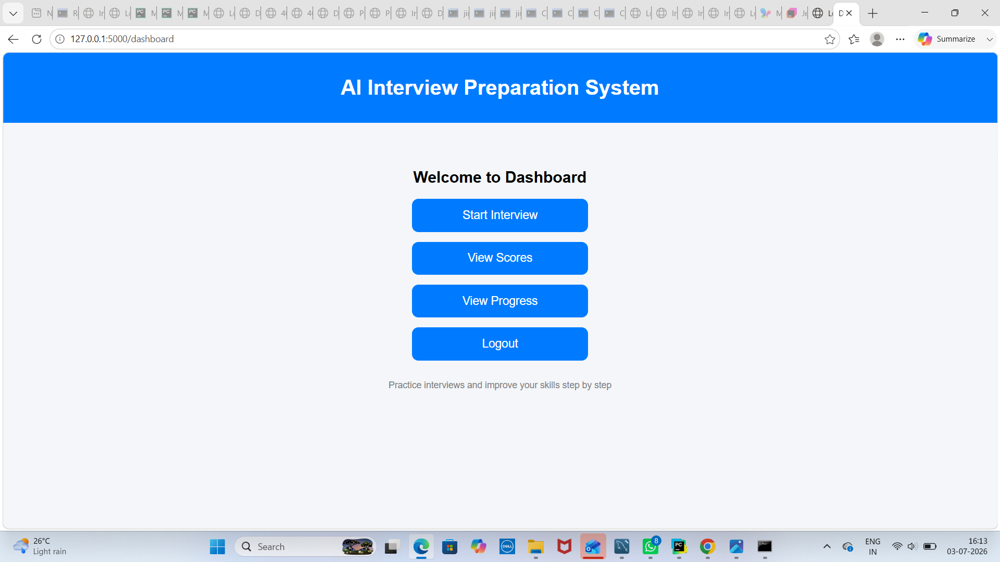
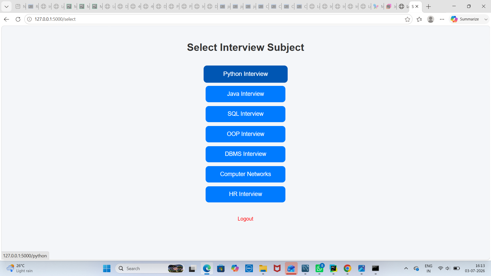
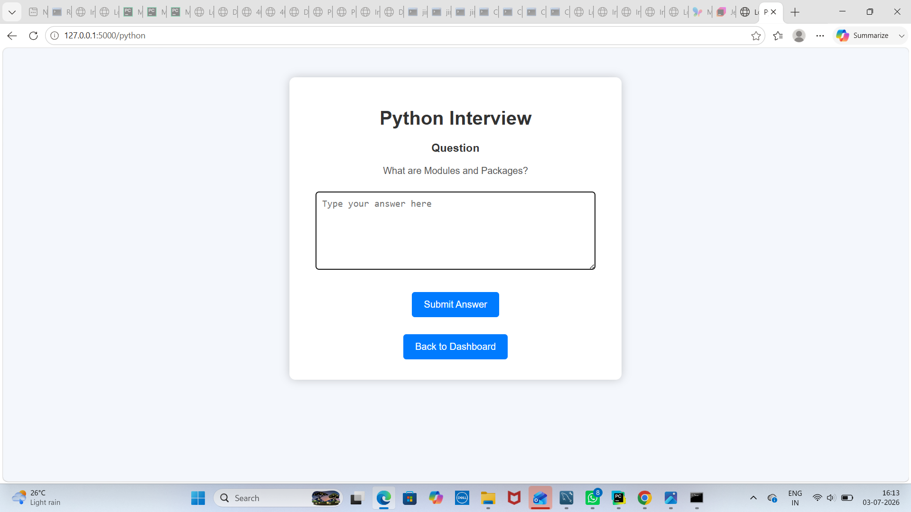
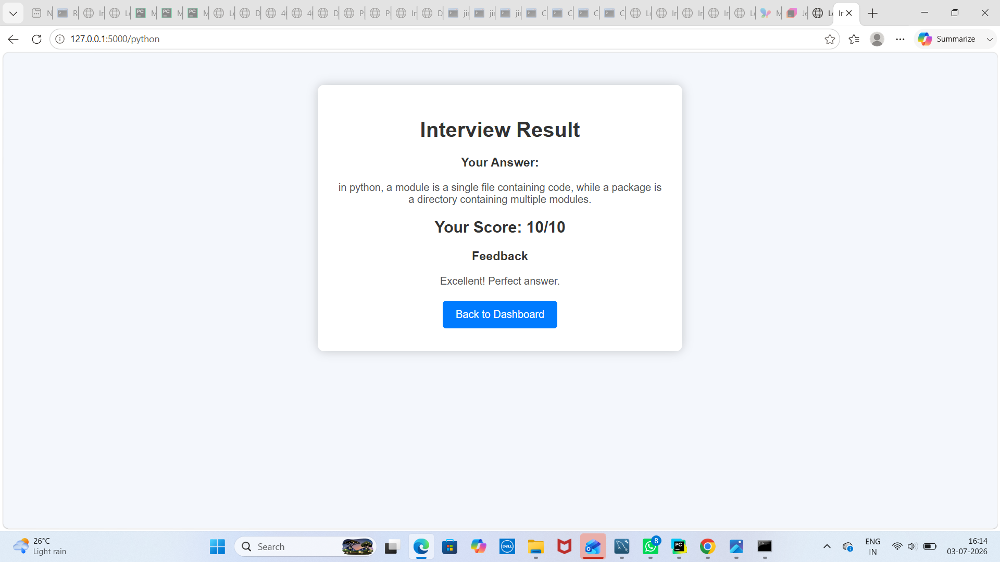
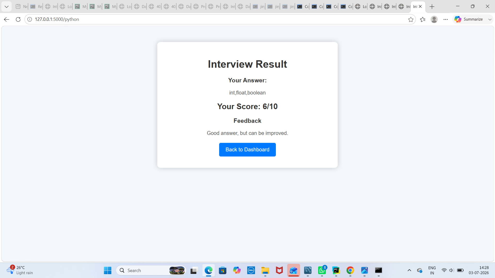
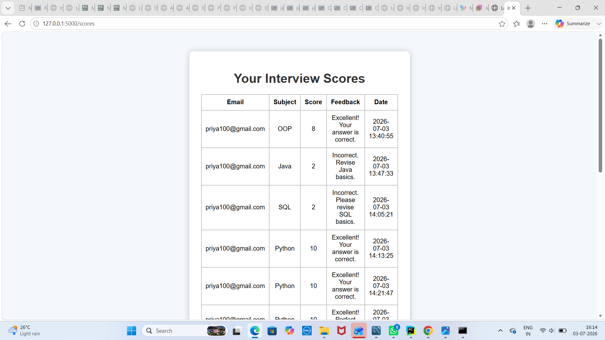
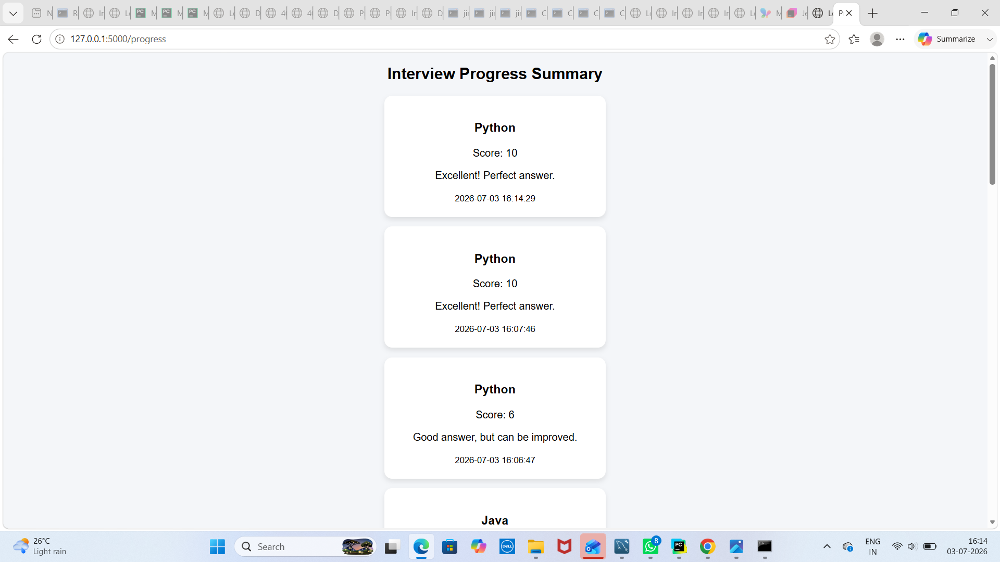
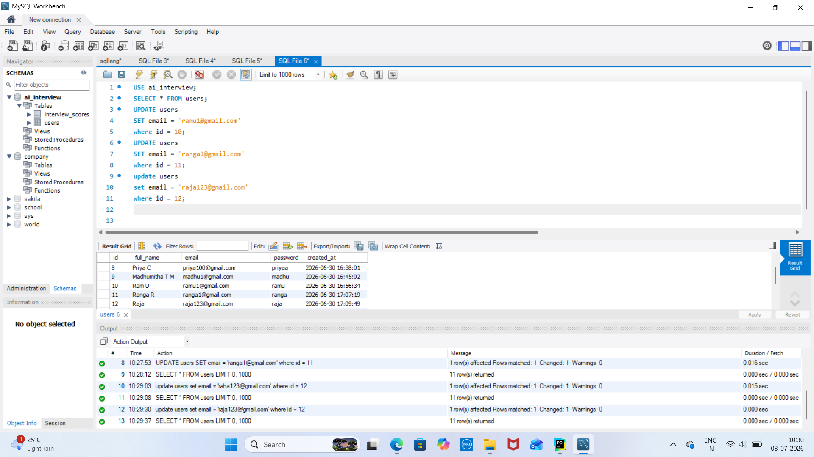
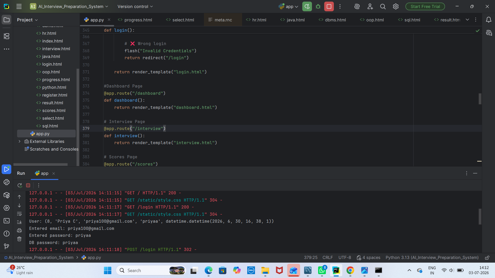
You can download my resume below:
Download ResumeEmail: khusikusuma1@gmail.com
Phone: +91 7259876769
GitHub: https://github.com/kusuma501